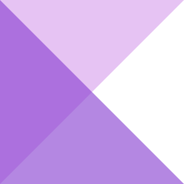

FlexMasonry
flexmasonry is responsive masonry grid and lightweight with pure javascript.
Minimal 0.79kb zero dependency cascading grid layout without pain.
flex-masonry
Star
Demo
There's a simple example Example 1.
HTML :
<div class="grid masonry"> <!-- masonry class optional -->
<div>Element_1</div> <!-- relate with below flex_masonry(".masonry") -->
<div>Element_2</div>
<div>Element_3</div>
<div>Element_4</div>
<div>Element_5</div>
<div>Element_6</div>
<div>Element_7</div>
</div>
CSS :
.grid {
width: 80%;
position: relative; /* Nessesory */
margin: 0 auto; /* (Optional) for cotanier centering */
}
.grid > div {
width: 240px; /* This is the place you can change with in % or px */
transition: all 0.5s; /* (Optional) for animations */
}
JavaScript :
<script src="flex_masonry.2.js"></script>
<script>
flex_masonry(".masonry");
</script>
Questions
Hit me on Twitter.
- FlexMasonry v2.0.0
© 2016 Kavan Mevada.
- GitHub